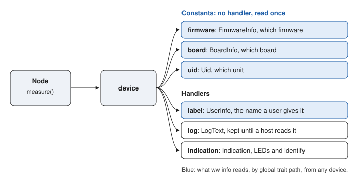

A device that tells about itself¶
A device on a bench, in a rack or at a customer's site gets asked the same questions again and again. Which firmware does it run? Which board is it, which revision, which unit? What did it log before it went wrong? The [[device contract]] is the part of the standard library that answers them: six traits that every device should offer, whatever else it does.
This page builds a sensor node that offers them. It then asks the node from Rust, from ww and from Python, with
code that works the same on any other device that offers the contract.
The example has three crates. [examples/node_api/src/lib.rs] holds the API, node_device the device code, and
node the host program and the simulated device. Start the simulated device in a terminal of its own:
It prints node at ws://127.0.0.1:8083/ww, the address the host programs below connect to.
The contract in one subtree¶
The contract's traits go into one subtree of the API, by convention a trait named Device:
/// What every device tells about itself, from the standard library.
#[ww_trait]
pub trait Device {
ww_impl!(firmware: ww_firmware_info::FirmwareInfo);
ww_impl!(board: ww_board_info::BoardInfo);
ww_impl!(uid: ww_uid::Uid);
ww_impl!(label: ww_user_info::UserInfo);
ww_impl!(log: ww_log::LogText);
ww_impl!(indication: ww_indication::Indication);
}
Each line answers one question:
| Item | Trait | Answers |
|---|---|---|
firmware |
ww_firmware_info::FirmwareInfo |
Which firmware and version, built when, and its build id. |
board |
ww_board_info::BoardInfo |
Which board, which revision and how the firmware knows it, which serial number. |
uid |
ww_uid::Uid |
Which unit: the chip's unique id, a MAC address or another id. |
label |
ww_user_info::UserInfo |
Which name a user gave the unit, such as "bench 2". |
log |
ww_log::LogText |
What the device logged, also before a host connected. |
indication |
ww_indication::Indication |
What the status LEDs show, and a blink that finds the unit on a bench. |
The API root puts the subtree beside what the node does itself, here one method:
/// A sensor node: the device contract, and what the node does.
#[ww_api_root]
pub trait Node {
ww_impl!(device: Device);
/// Takes a reading and logs it.
#[effect(actuate)]
fn measure();
}
The subtree can sit at any depth and under any name. A host finds each trait by its [[global trait path]], as it
found ww_gpio::Bank in Using the standard library. The figure shows the node's subtree and which of its
traits ww info reads.

What never changes is a constant¶
The firmware, the board and the unit's id don't change while the device runs. Their traits declare them as const
items, and a device gives their values in an implementation of the NodeConsts trait that ww_codegen! generates.
The generated code answers a read of a constant by itself, with no handler:
impl api_impl::NodeConsts for Node {
const DEVICE_FIRMWARE_FIRMWARE: FirmwareSummary<'static> = FirmwareSummary {
name: MaxLen::new_unchecked("node_sim"),
version: Version::full(0, 1, 0, None, None),
git: None,
built: None,
profile: BuildProfile::Debug,
};
const DEVICE_FIRMWARE_BUILD_ID: MaxLen<RefVec<'static, u8>, 32> =
MaxLen::new_unchecked(RefVec::new_bytes(&[]));
const DEVICE_BOARD_BOARD: BoardSummary<'static> = BoardSummary {
name: MaxLen::new_unchecked("sensor node"),
revision: MaxLen::new_unchecked("A"),
revision_source: RevisionSource::Assumed,
variant: MaxLen::new_unchecked("simulated"),
bom_variant: MaxLen::new_unchecked(""),
serial: MaxLen::new_unchecked("SN-0001"),
build_date: None,
};
const DEVICE_UID_IDS: MaxLen<RefVec<'static, UniqueId<'static>>, 4> =
MaxLen::new_unchecked(RefVec::Slice {
slice: &[UniqueId {
kind: UidKind::ChipUnique,
source: UidSource::InternalIc,
value: MaxLen::new_unchecked(RefVec::new_bytes(&CHIP_ID)),
}],
});
const DEVICE_LABEL_CAPABILITIES: UserInfoCaps = UserInfoCaps {
name_max: NameMax::bounded(NAME_MAX as u8),
notes_max: NotesMax::bounded(0),
persistent: false,
};
}
The names join the path of each constant: DEVICE_FIRMWARE_FIRMWARE is FIRMWARE of firmware in device. A real
firmware fills FirmwareSummary from its build, as ww_firmware_info describes, and its unique
id from the chip. BUILD_ID names the firmware's ELF file for the host tools that decode logs and crashes; the
simulated node has none.
The label and the log have handlers¶
The label is a property that a user writes, so it has a read and a write handler. The node keeps it in RAM, which
CAPABILITIES.persistent: false tells hosts:
async fn set_device_label_name(
&mut self,
_cx: &mut Context<'_, impl EventOut>,
value: MaxLen<&'_ str, 32>,
) -> SetResult<wire_weaver::Error<'_, UserInfoError>> {
let name = value.as_bytes();
self.name[..name.len()].copy_from_slice(name);
self.name_len = name.len();
Set
}
async fn get_device_label_name(
&mut self,
_cx: &mut Context<'_, impl EventOut>,
) -> GetResult<MaxLen<&'_ str, 32>, wire_weaver::Error<'_, UserInfoError>> {
let name = core::str::from_utf8(&self.name[..self.name_len]).unwrap_or("");
Value(MaxLen::new_unchecked(name))
}
The log is a reliable stream of LogRecords. Reliable means that the device keeps each record in a store until a
host acknowledges it. A host that connects later still gets what the device logged before, and nothing is lost across
a reconnect. The node logs through one function:
/// Logs `message` if the level lets it through: one record of the `log` stream, kept until a host has it.
async fn log(&mut self, severity: Severity, message: &str) {
if !self.level.allows(severity) {
return;
}
let record = LogRecord {
severity,
target: MaxLen::new_unchecked("node"),
message: MaxLen::new_unchecked(message),
truncated: false,
};
let t = ww_si::Second::micro(self.now.as_micros() as u32);
_ = api_impl::stream_data_ser()
.device()
.log()
.records_push(&mut self.log, &record, 1, Some(t), &mut self.buf)
.await;
}
It logs booted when it starts and one record per call of measure():
async fn measure(&mut self, _cx: &mut Context<'_, impl EventOut>) -> RpcResult<()> {
self.readings += 1;
let mut message = Message::default();
// a reading number and a fixed temperature fit MESSAGE_MAX
_ = write!(message, "reading {}: 21.50 °C", self.readings);
self.log(Severity::Info, message.as_str()).await;
Ready(())
}
A device leaves out the optional items it doesn't have, here the notes of the label, the reworks of the board and the brightness of the LEDs. The host sees them as left out in the introspection data:
mod api_impl {
wire_weaver::ww_codegen!(
node_api :: Node for super::Node,
server = true, no_alloc = true, use_async = true,
method_model = "_=immediate",
property_model = "_=get_set",
// optional items this node doesn't have
omit = [
"device.firmware.BUILD_RECORD",
"device.board.REWORKS",
"device.board.set_reworks",
"device.label.notes",
"device.indication.brightness",
"device.indication.NAMES",
],
introspect = "with_docs",
);
}
From the command line¶
ww info asks any device the contract's questions. It needs nothing of the device's own API: it reads each trait by
its global trait path and says so when a device doesn't offer one.
$ ww --websocket ws://127.0.0.1:8083/ww info
API node_api@0.1.0 (wire w1.0)
Hello framer=1 link=1 shrink_wrap=1 api_model=2
Firmware node_sim 0.1.0, debug
Build id none (the firmware keeps no build id note)
Board sensor node rev A (assumed), variant simulated, serial SN-0001
Ids chip 4e4f444500000001 (internal, primary)
Label "" (lost at power off)
Last reset not implemented by this device
API and Hello describe the connection: the API crate and its wire version, and the protocol generations both
sides agreed on. The rest comes from the contract. The label is empty until a user names the unit. Last reset
comes from ww_firmware_info::LastReset, which records why a device last reset, with a crash's registers. The node
doesn't offer it, and ww info says so instead of failing.
ww introspect shows the subtree with the value of each constant:
$ ww --websocket ws://127.0.0.1:8083/ww introspect -d
trait Node node_api@0.1.0
├─ 0 impl device: node_api::Device
│ ├─ 0 impl firmware: ww_firmware_info::FirmwareInfo
│ │ ├─ 0 const property FIRMWARE: FirmwareSummary = FirmwareSummary { name: "node_sim", version: Version { major: 0, minor: 1, patch: 0, pre: None, build: None }, git: None, built: None, profile: Debug }
│ │ ├─ 1 const property BUILD_ID: MaxLen<Vec<u8>, 32> = []
│ │ └─ 2 #[optional] const property BUILD_RECORD: MaxLen<Vec<u8>, 512> (left out by this device)
│ ├─ 1 impl board: ww_board_info::BoardInfo
│ │ ├─ 0 const property BOARD: BoardSummary = BoardSummary { name: "sensor node", revision: "A", revision_source: Assumed, variant: "simulated", bom_variant: "", serial: "SN-0001", build_date: None }
│ │ ├─ 1 #[optional] const property REWORKS: MaxLen<Vec<Rework>, 16> since w1.2 (left out by this device)
│ │ └─ 2 #[optional] #[effect(persist)] fn set_reworks(changes: MaxLen<Vec<ReworkState>, 16>, program: bool) -> Result<ReworkChange, ReworkError> since w1.2 (left out by this device)
│ ├─ 2 impl uid: ww_uid::Uid
│ │ └─ 0 const property IDS: MaxLen<Vec<UniqueId>, 4> = [UniqueId { kind: ChipUnique, source: InternalIc, value: 0x4e4f444500000001 }]
│ ├─ 3 impl label: ww_user_info::UserInfo
│ │ ├─ 0 const property CAPABILITIES: UserInfoCaps = UserInfoCaps { name_max: 32 B, notes_max: 0 B, persistent: false }
│ │ ├─ 1 #[effect(persist)] #[errors(TooLong, CommonError(Busy, Fault))] rw property name: MaxLen<String, 32>, write error: UserInfoError
│ │ └─ 2 #[optional] #[effect(persist)] #[errors(TooLong, CommonError(Busy, Fault))] rw property notes: MaxLen<String, 256>, write error: UserInfoError (left out by this device)
│ ├─ 4 impl log: ww_log::LogText
│ │ ├─ 0 #[errors(CommonError(Busy, Unsupported))] #[reliable] stream records(): LogRecord
│ │ └─ 1 #[effect(edit)] #[errors(CommonError(Unsupported))] rw property level: LevelFilter
│ └─ 5 impl indication: ww_indication::Indication
│ ├─ 0 #[effect(actuate)] rw property mode: Mode
│ ├─ 1 #[optional] #[effect(actuate)] rw property brightness: Brightness (left out by this device)
│ ├─ 2 #[optional] #[effect(actuate)] #[errors(CommonError(Unsupported, Busy))] fn identify(duration: Quantity<Second, Unbounded>)
│ └─ 3 #[optional] const property NAMES: Vec<String> (left out by this device)
└─ 1 #[effect(actuate)] fn measure()
24 resources, 7 traits, 56 types, 40220 bytes full, 574 bytes sent
crates: node_api@0.1.0, ww_firmware_info@0.1.0, ww_board_info@0.3.0, ww_uid@0.1.0, ww_user_info@0.1.0, ww_log@0.1.0, ww_indication@0.1.0, ww_si@0.5.0, exact_units@0.1.0, ww_version@0.2.0, ww_date_time@0.1.0, ww_numeric@0.3.0
api hash: c12a1fa123a8b694
From Rust¶
The host program [examples/node/examples/about.rs] reads the constants through the generated [[client]]. Each
constant has a read_ call named after it:
let device = node.device();
let firmware = device.firmware().read_FIRMWARE().read().await?;
let board = device.board().read_BOARD().read().await?;
let ids = device.uid().read_IDS().read().await?;
let v = &firmware.version;
println!(
"firmware {} {}.{}.{}",
firmware.name.as_str(),
v.major.0,
v.minor.0,
v.patch.0
);
println!(
"board {} rev {}",
board.name.as_str(),
board.revision.as_str()
);
for id in ids.iter() {
println!("id {:?}: {:02x?}", id.kind, id.value.as_slice());
}
It names the unit and reads the name back:
let name = MaxLen::new("bench 2".to_owned()).map_err(|e| anyhow!("{e:?}"))?;
device.label().write_name(name).write().await?;
println!("name {}", device.label().read_name().read().await?.as_str());
Last, it makes the node log a reading and reads the log from its start. records_status() says which session the log
is in, and records_resume() opens the stream at a position of that session, here 0:
node.measure().call().await?;
// the log keeps its records until a host has them: read them from the start of the node's session
let status = device.log().records_status().read().await?;
let session = status.session.context("the log has no session")?;
let from_start = StreamCursor {
session,
pos: UVlq64(0),
};
let mut log = device.log().records_resume(from_start).call().await?;
let mut records = 0;
while records < 2 {
if let StreamEvent::Item { pos, t, value, .. } = log.recv_event().await? {
let t = t.map_or(0.0, |t| t.to_f64());
let (severity, message) = (value.severity, value.message.as_str());
println!("#{pos} at {t:.3} s, {severity:?}: {message}");
records += 1;
}
}
Run the program in a second terminal, while the simulated device runs in the first:
It prints the firmware, the board, the id and the name. Then it prints #1 ... reading 1: 21.50 °C before
#0 at 0.000 s, Info: booted. The newest record comes first, as the stream's live run. The records the host missed
follow as the backfill, each at its position, so a program that sorts by position sees the log in order.
From Python¶
Python reads a constant like a property, with read(). A struct is a dict:
about = dev.device
firmware = about.firmware.FIRMWARE.read()
board = about.board.BOARD.read()
v = firmware["version"]
print("firmware:", firmware["name"], f"{v['major']}.{v['minor']}.{v['patch']}")
print("board:", board["name"], "rev", board["revision"], "serial", board["serial"])
The label is a property like any other:
identify(duration) blinks the unit's LEDs so that you can find it on a bench. A second call while the first runs is
refused with the common error Busy:
about.indication.identify(2.0)
try:
about.indication.identify(2.0)
except ww.RemoteError as e:
print("identify again:", e.common)
The whole script is [examples/stdlib_py/node.py]. With the simulated device running, it prints:
$ python node.py
firmware: node_sim 0.1.0
board: sensor node rev A serial SN-0001
name: bench 2
identify again: Busy
On a real board¶
A firmware serves the same contract, with real values for its constants. The RP2350 board example
examples_mcu/rp2 logs through ww_log::LogDefmt, the compact form of the log that the firmware's ELF file decodes
on the host. The device contract reference shows how a firmware reports its build id, how ww
finds the ELF file for it, and what ww report collects for a bug report.
Where to go next¶
- Changing your API shows how to add to an API so that old hosts and old firmware keep working.
- The list of crates describes every crate of the standard library, the contract's included.